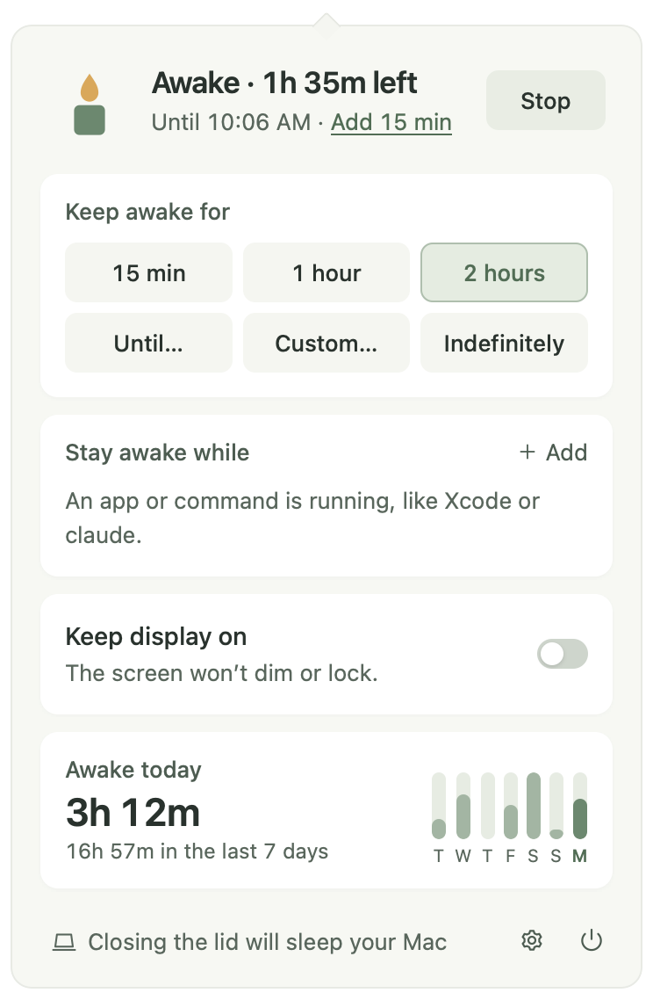

Keeps your Mac awake
On demand, for a set time, or while an app or command runs. And it tells you what else is keeping your Mac awake.

What it does
-
One click
Until you stop it, 15 minutes, an hour, two hours, until a time, or any length. The menu bar candle burns down as time runs out.
-
While something runs
Stay awake while Xcode,
claude,ffmpegor any command runs, on power, with an external display, or on a schedule. -
What else is awake
See which apps hold your Mac awake and why: a call, audio playing, or a
caffeinatestarted by a tool. -
Careful by default
Stops below 20% battery, warns when closing the lid will sleep the Mac, and never changes system settings.
How it works
Wick holds a standard macOS power assertion, the same thing caffeinate does. You can see it in pmset -g assertions.
Nothing left behind. macOS releases the assertion when Wick quits or crashes. Wick needs no administrator password and asks for no permissions.
Privacy
No account, telemetry, analytics or crash reporting. Wick connects only to:
github.comrelease checks, daily unless turned off
Details in PRIVACY.md and SECURITY.md.
Install
Builds don't carry an Apple or Microsoft publisher signature yet, so the system warns on first launch. Updates are signed and verified in the app.
macOS 12+. Open the universal .dmg and move Wick to Applications. If macOS blocks it, go to System Settings → Privacy & Security → Open Anyway.
Windows 10/11. Run the -setup.exe. If SmartScreen warns, choose More info → Run anyway.